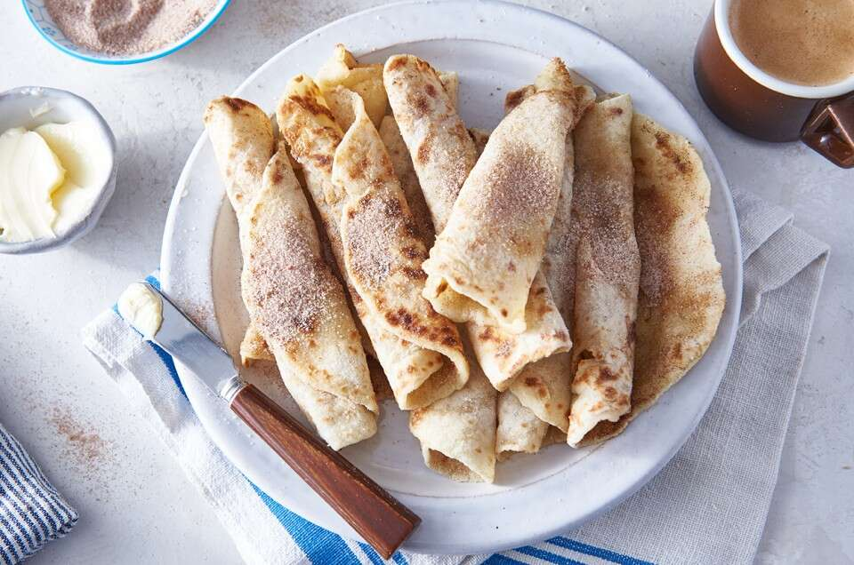

Lefse

Beloved by Norwegians everywhere, this traditional flatbread is akin to to a thick crêpe.
While in Norway lefse was traditionally made from a variety of flours, when brought to America it became strictly potato-based because potatoes are what most Norwegian immigrants were able to grow quickly and successfully here. No longer a daily bread for most, lefse is a must during the holidays: buttered, rolled up, and served alongside lutefisk (baked salt-dried cod), it's a Christmas tradition. A sprinkle of sugar or cinnamon sugar takes it from meal accompaniment to a light, sweet snack enjoyed any time of the day.
Ingredients
- 1 3/4 cups (269g) peeled, cooked, and riced boiling potato, very lightly packed
- 1/3 cup + 4 teaspoons (53g) unbleached all-purpose flour, divided
- 2 tablespoons (28g) butter, softened
- 2 tablespoons (28g) milk or heavy cream
- 3/4 teaspoon salt
- 1 teaspoon granulated sugar
- 1/3 cup (40g) unbleached all-purpose flour
Steps
- Stir together the hot riced potatoes, 4 teaspoons (10g) of the flour, the butter, cream or milk, salt, and sugar, mixing gently just until well combined. The hot potatoes should melt the soft butter, so you shouldn't have to stir for very long.
- Refrigerate the mixture for several hours, or overnight. This will make the lefse easier to roll out.
- Gently (but thoroughly) stir in the remaining 1/3 cup (43g) flour.
- Preheat a griddle to about 375°F, or preheat a skillet over medium heat.
- Divide the dough into 12 pieces; each will weigh about 30g.
- Working with one piece of dough at a time, quickly and gently roll it into a ball, then place it on a well-floured work surface. Pat it into a 4" circle, then use a few quick, gentle strokes to roll it to about 6" in diameter, about 1/16" thick.
- Place the lefse onto the griddle or into the skillet. Cook on one side until speckled with brown spots; this should take about a minute. If it's longer or shorter than that, adjust the griddle's heat. Flip the lefse over, and cook the other side until it's flecked with brown, about 1 minute. Transfer the cooked lefse to a parchment-lined baking sheet or large plate.
- Repeat with the remaining dough, fanning the cooked lefse out on the baking sheet or plate so they don't stick to one another as they cool.
- Serve lefse warm or at room temperature, spread with softened butter and rolled into a cylinder or folded into quarters. Add sugar or cinnamon sugar for a sweet treat.
- Store lefse flat, wrapped in plastic, for several days at room temperature; freeze for longer storage.